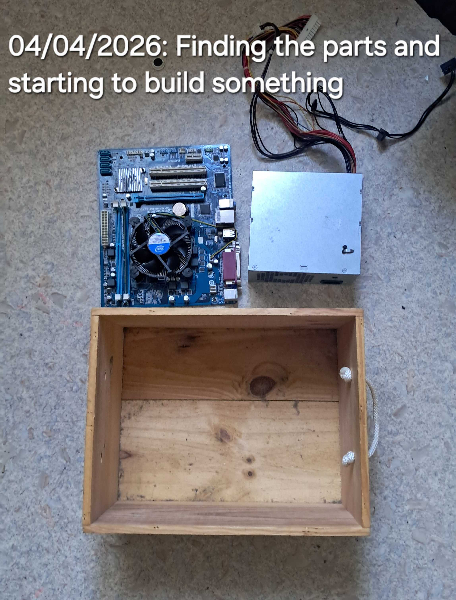
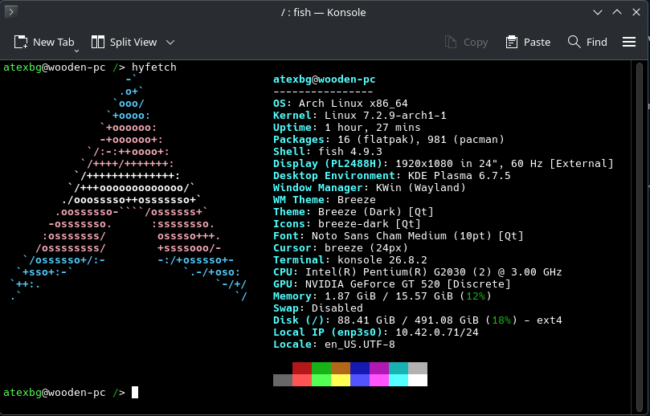
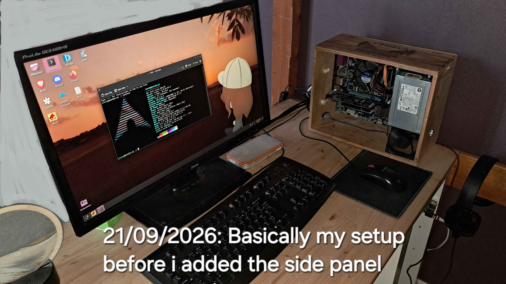
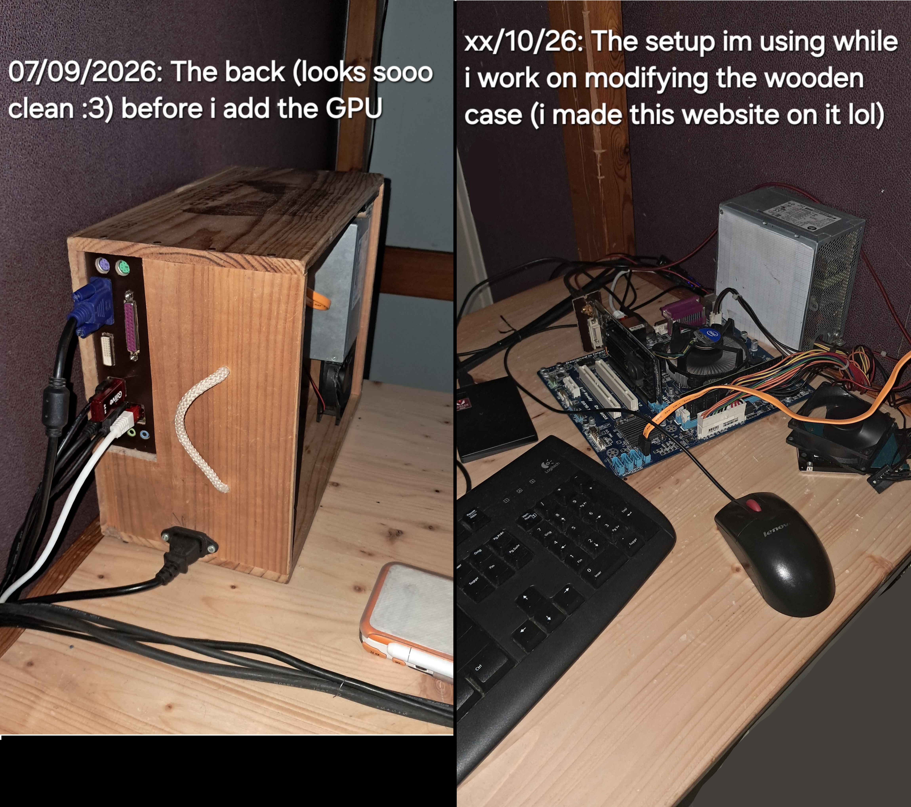
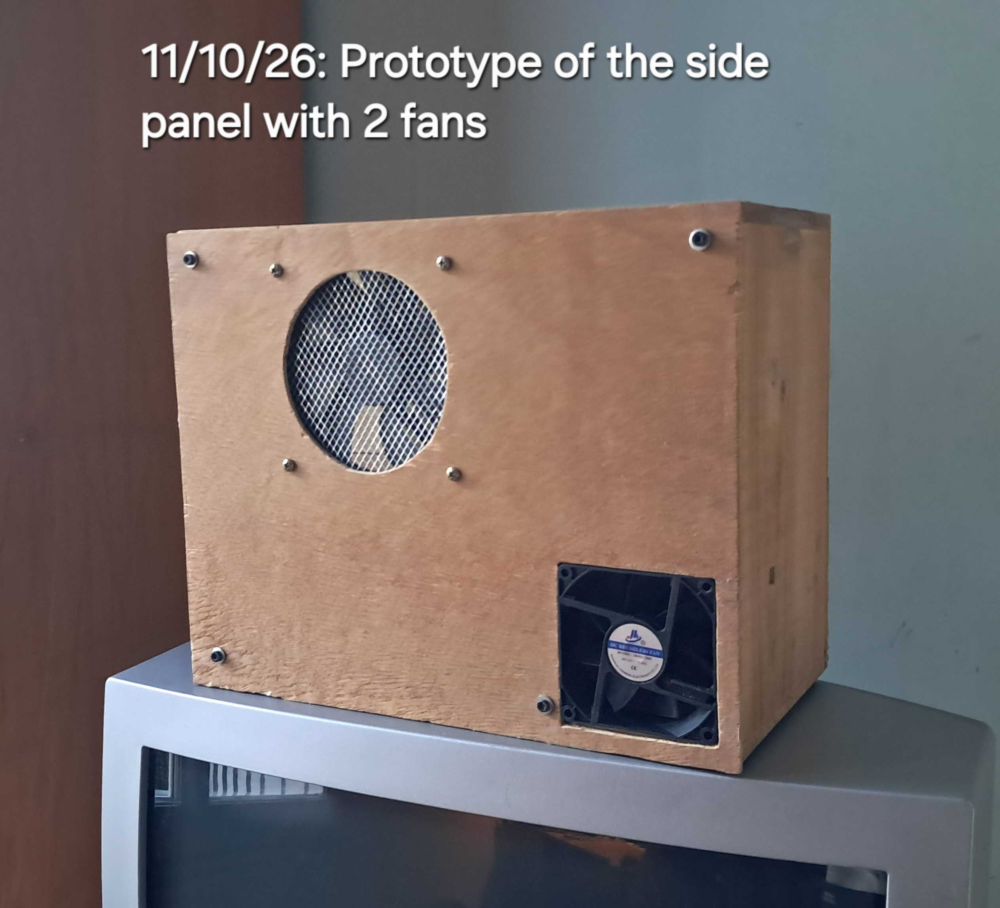

...a few PC components i had, some CPU/motherboard/PSU i had found on the trash, a RAM stick i got from a friend, an hard drive found on an old laptop, etc... yknow just some random components i found and managed to make a working PC from :D
That's the thing, i had some old wood boxes my dad gave me (they were originally used to store wine bottles), and i once was like "uhmm i should make a PC with my components but i dont have any case, yknow what this box should do the trick!", and then i started working on it

at first it was just a funny idea i had, because i like computers and i like working with wood so i wanted to combine both, so i worked on that PC for some time
In this sad day that is June 17 2026, my laptop (a modern ASUS Experbook which was my only other computer) died: some metal scraps went inside and touched the motherboard, frying something along the way. i tried fixing it with the very limited tools and knowledge i have but couldn't do it, as today this laptop is still sitting in a drawer... so what was my solution for my dead laptop? Just using my wooden PC of course! :P
So i set it up, used a USB 2.0 stick with Linux Mint on it as my main drive for some time because i didn't have an HDD back then, and also learning how to do stuff without a mouse because i only had a keyboard (which then broke, letting me with no solution lol)
Pretty well actually! In just 2 months i got 16GB of DDR3 RAM that a friend sold me for 10€ (~11.13$, and its the only thing on my PC i actualy paid for), an old GeForce GT 520 graphics card from a broken desktop PC, a proper hard drive, and some tools my dad gave me to help making the wooden case!

Some more details about the other things that aren't listed on the image:
Here's some pictures of my PC "setup" (if i can call it this way lmao) :


